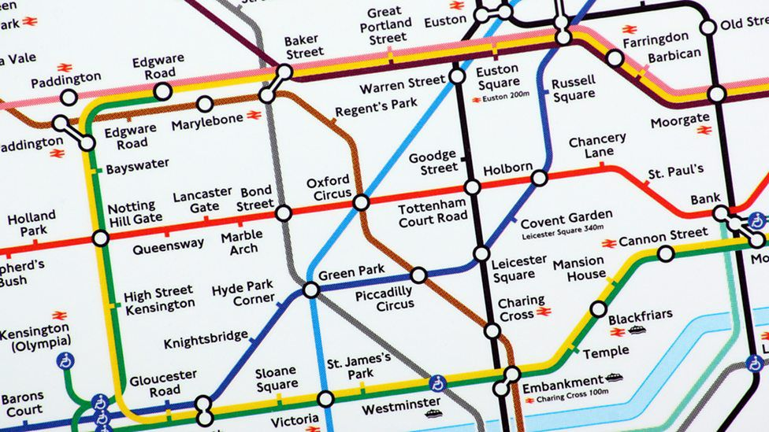
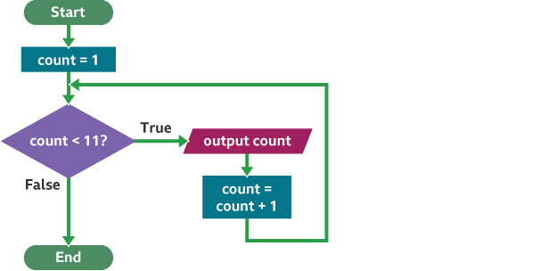

2.1 Algorithms
Here you will revise the following:
- 2.1.1 Computational Thinking
- Principles of computational thinking:
- Abstraction
- Decomposition
- Algorithmic Thinking
- 2.1.2 Designing, Creating and Refining Algorithms
- Identify the inputs, processes, and outputs for a problem
- Structure diagrams
- Create, interpret, correct, complete, and refine algorithms using:
- Pseudocode
- Flowcharts
2.1.1 Computational Thinking
Computational thinking is a set of problem-solving methods that involve expressing problems and their solutions in a way that a computer could execute.
Abstraction
Abstraction: Reducing complexity by removing unnecessary details to focus on the essential information.
When you abstract a problem, you are essentially creating a simplified model. For example, when creating a map for navigation, you don't need to show every single tree or house; you only need roads, landmarks, and route information.
Decomposition
Decomposition: Breaking down a complex problem into smaller, more manageable sub-problems.
This makes a large problem easier to understand and solve. Each sub-problem can then be tackled individually. For instance, building a house can be decomposed into building the foundation, walls, roof, plumbing, electrics, etc.
Algorithmic Thinking
Algorithmic Thinking: Developing a step-by-step solution to a problem, known as an algorithm.
This involves defining a clear, unambiguous sequence of instructions to achieve a specific outcome. Algorithms are the core of computer programs.
It's your turn!
Describe what is meant by 'computational thinking' and explain how its principles can help solve complex problems. [4 Marks]
2.1.2 Designing, Creating and Refining Algorithms
Inputs, Processes, and Outputs (IPO)
Every problem or system can be broken down into inputs, the processes applied to those inputs, and the resulting outputs.
- Inputs: Data or information that goes into the system.
- Processes: The steps or operations performed on the inputs.
- Outputs: The results or information produced by the system.
Pseudocode
Pseudocode: An informal high-level description of the operating principle of a computer program or algorithm.
It uses a mix of natural language and programming constructs, making it easy to understand for humans but not directly executable by computers. It's great for planning.
RECEIVE name FROM USER
DISPLAY "Hello, " + name
RECEIVE num1 FROM USER
RECEIVE num2 FROM USER
SET sum = num1 + num2
IF sum > 100 THEN
DISPLAY "Sum is very large!"
ELSE
DISPLAY "Sum is: " + sum
END IF
Flowcharts
Flowchart: A diagram representing a sequence of operations in an algorithm or process.
They use specific shapes to represent different types of actions or decisions, connected by arrows to show the flow of control.
It's your turn!
Draw a flowchart to represent an algorithm that takes a user's age as input. If the age is 18 or over, it outputs "You are an adult". Otherwise, it outputs "You are a minor".